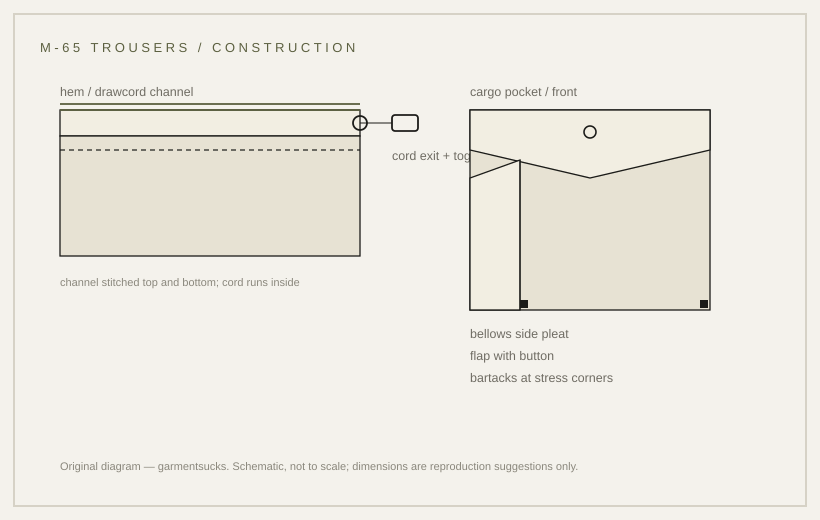

issue · 1965
M-65 field trousers: the manual records the cloth, not the date
Celana field M-65: yang tercatat di manual adalah kainnya, bukan tanggalnya.
probable Published 2026-11-13 · last checked 2026-11-13

1. Ringkasan
Celana lapangan M-65 adalah bagian bawah sistem M-65: kain cotton-nylon wind-resistant sateen OG-107, saku kargo, dan drawcord di hem.
Yang bisa dibuktikan dari dokumen hanya sebagian — manual militer mencatat nama, kain, nomor stok, dan liner; tanggal 1965 serta detail saku hanya berasal dari sumber komersial. Confidence: probable — identitas dan kain terverifikasi, tanggal dan fitur belum.
2. Apa ini
Celana field M-65: pasangan bawah dari jaket M-65, dipakai di atas celana biasa atau dengan liner. Istilah: cargo pocket (saku tempel besar dengan pleat di samping), drawcord (tali di dalam saluran hem untuk menutup kaki), sateen (tenunan rapat dengan permukaan licin), OG-107 (kode warna olive green), liner (lapisan hangat terpisah yang dikancingkan di dalam).
3. Asal-usul dan konteks
Versi lama kartu ini menulis issued from 1965 seolah tercatat. Yang ditemukan: manual perawatan militer TM 10-8400-201-23 mencantumkan TROUSERS, MEN'S COTTON-NYLON WIND RESISTANT SATEEN, OG107 beserta nomor stok per ukuran, dan mencantumkan Liner, Cold Weather Trouser Field, Arctic, M-65.
Tanggal 1965 muncul di dua sumber komersial, bukan di dokumen yang saya buka. Keduanya juga menyebut saku kargo dan drawcord, dan keduanya menjual reproduksi atau memandu gaya — sehingga detail yang sama bisa saja bersumber dari satu sama lain. Tanpa dokumen primer, tanggal dan fitur tetap berstatus probable. Tidak ditemukan nomor spesifikasi resmi untuk celana ini. Saya menguji MIL-T-43566; dokumen itu merujuk cloth Oxford nylon dan parka/trousers wet weather, bukan celana M-65, sehingga nomor itu tidak boleh dipakai.
4. Mekanisme fungsi
Sateen yang rapat menahan angin tanpa menjadi kaku; dua saku kargo memindahkan beban ke paha sehingga tetap terjangkau saat duduk atau di dalam kendaraan; drawcord hem menutup celah di atas boot. Mekanisme ini masuk akal dari konstruksi, tetapi tidak ada dokumen yang menjelaskan alasan desainnya.
5. Konstruksi: cara dibuat
Urutan kerja yang terbaca dari konstruksi: potong panel kaki, pasang saku kargo (pleat samping, flap, bartack di empat sudut), jahit sisi dalam dan luar, pasang saluran drawcord di hem, lalu waistband dan fly.
Kain utama sateen cotton-nylon; liner adalah komponen terpisah dengan kancing. Saluran hem biasanya dibuat dengan melipat kain dua kali lalu menjahit dua baris, sehingga tali tidak bergesekan langsung dengan tepi kain. Saku kargo dipasang sebelum sisi kaki dijahit, karena bagian dalam saku harus ditutup oleh jahitan sisi. Diagram di halaman ini menunjukkan kedua bagian itu, bukan foto periode. Diagram di halaman ini menunjukkan saluran hem dan konstruksi saku, bukan foto periode.
6. Varian lintas era
| Varian | Tahun/negara | Pembeda teknis | Status sumber |
|---|---|---|---|
| M-51 field trousers | 1951, AS | pendahulu sistem, kain lebih berat | tidak diverifikasi di dokumen yang dibuka |
| M-65 OG-107 | 1965 (dilaporkan), AS | sateen cotton-nylon OG-107, liner terpisah | nama dan kain: manual; tanggal: komersial |
| M-65 woodland / BDU | 1981, AS | pola woodland, kain NYCO ripstop | sekunder |
| Reproduksi modern | kini | sering tanpa drawcord, kain lebih ringan | pengamatan pasar |
7. Cara mengenali asli vs reproduksi
Pada asli: sateen dengan permukaan licin dan jatuh kaku, label berisi nomor stok 8405-782-2948 sampai 8405-782-2960 (ukuran short/regular), kancing untuk liner, dan saluran drawcord di hem.
Pada reproduksi: kain lebih ringan, drawcord dihilangkan, saku kargo tanpa pleat, bartack jarang atau tidak ada. Periksa juga kancing liner di bagian dalam pinggang; pada reproduksi bagian ini sering dihilangkan karena tidak terlihat saat dipakai.
8. Kesalahan umum dan mitos
Mitos pertama: kain celana M-65 adalah poplin. Manual menyebut sateen; poplin adalah kain jaketnya. Mitos kedua: 1965 adalah tanggal yang tercatat di spesifikasi — yang ada hanya dua sumber komersial. Kesalahan ketiga: memperlakukan reproduksi sebagai issue asli tanpa memeriksa label nomor stok.
9. Cara membacanya saat dipakai
Perhatikan hem: apakah kaki tetap jatuh lurus saat drawcord dikencangkan, dan apakah saku kargo tetap datar saat kosong. Celana ini dibaca dari siluet bawah, bukan dari jaketnya.
10. Jejak desainer modern
Saku kargo dan drawcord adalah dua detail yang paling sering dipinjam streetwear; yang biasanya hilang justru drawcord-nya, karena siluet lebih penting daripada fungsi. Pola ini sama dengan yang dicatat di kartu brands situs ini.
11. Spesifikasi
Tabel kiri hanya memuat yang tercatat di sumber; tabel kanan adalah saran kerja reproduksi, bukan angka periode.
| Tercatat di sumber | Saran reproduksi |
|---|---|
| Kain: cotton-nylon wind resistant sateen, OG-107 (TM 10-8400-201-23) | Panjang drawcord 90–110 cm, tali 4 mm |
| Nomor stok 8405-782-2948 … 8405-782-2960 (short/regular) | Saluran hem lebar 15 mm |
| Liner: Cold Weather Trouser Field, Arctic, M-65, stok 8405-00-935-0546/0547 | Saku kargo 18 × 20 cm, pleat 28 mm |
| Tanggal 1965: tidak ada di dokumen yang dibuka | — |
12. Sumber
Daftar lengkap ada di bagian Sources di bawah; setiap klaim bernomor muncul di tabel Claims dengan statusnya.
13. Pertanyaan dan latihan
1) Periksa hem celana di lemari kamu: ada saluran dan tali, atau hanya jahitan? 2) Cari label nomor stok dan cocokkan dengan tabel manual — apakah cocok? 3) Mengapa kartu ini tetap memakai tanggal 1965 meski tidak ada dokumen? Jawabannya ada di tabel klaim.

Glossary
- Cargo pocket
- Saku tempel besar di paha dengan pleat samping yang bisa mengembang.
- Drawcord
- Tali di dalam saluran hem untuk menutup kaki.
- Sateen
- Tenunan rapat berpermukaan licin; menahan angin, lambat kering.
- OG-107
- Kode warna olive green Amerika.
- Liner
- Lapisan hangat terpisah yang dikancingkan di dalam.
Sources
- [S1] [Primer/transkripsi] TM 10-8400-201-23, labeling men's trousers, hlm. 185
- [S2] [Primer/transkripsi] TM 10-8400-201-23, label liner cold weather (kutipan indeks), hlm. 186
- [S3] [Sekunder komersial] Maisonspecial — M-65 field pants, 1965
- [S4] [Sekunder komersial] FUDGE.jp — sejarah M-65 field pants
- [S5] [Sekunder/agregator] NSN 8415-00-782-2952 Trousers, Cold Weather (halaman gagal dibuka)
- [S6] [Komersial] WorthPoint — M-65 trousers, 50/50 cotton-nylon
- [Foto] Grailed listing — listing photo © @sosadon
Claims & sources
| Claim | Source | URL | Status |
|---|---|---|---|
| Celana M-65: cotton-nylon wind resistant sateen, OG-107 | TM 10-8400-201-23, hlm. 185 (transkripsi) | link | terverifikasi |
| Nomor stok 8405-782-2948 … 8405-782-2960 | TM 10-8400-201-23 | link | terverifikasi |
| Liner Cold Weather Trouser Field, Arctic, M-65 (stok 8405-00-935-0546/0547) | TM 10-8400-201-23, hlm. 186 (kutipan indeks) | link | terverifikasi sebagian |
| Tanggal adopsi 1965 | Maisonspecial; FUDGE | link | tidak terverifikasi (primer) |
| Dua saku kargo di paha; drawcord di hem | Maisonspecial; FUDGE | link | tidak terverifikasi (primer) |
| Komposisi 50/50 cotton-nylon | WorthPoint (reseller) | link | tidak terverifikasi |
| NSN 8415-00-782-2952 = Trousers, Cold Weather | NSN aggregator | link | tidak terverifikasi (fetch gagal) |